|
|
|
||||||||||
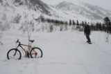 Я во второй половине дня из Выдрино только добрался - дела семейные и все такое. За кунгом увидел велосипед! Кого-то на снегоходе затянули, а обратно дяденька сам поехал, лично видел :) Пока ребята ходили по Трем Березам, я немного попрыгал трамплина и по снежным кочкам, которые возле тропы напротив Большого кулуара. Потом смотрел, как все благополучно и быстро/медленно спустились по Большому. Потом еще немного попрыгали и пошли в зимуху перекусить. А возле зимухи с прошлых выходных выкопана пещерка, даже в ней тогда кто-то ночевал. А мы просто в ней повалялись и пофотались :) |
||||
|
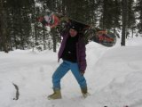 Надя |
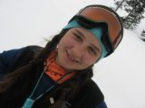 Оля |
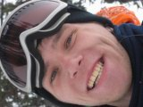 Лёха-Радист |
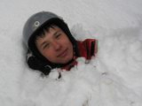 Миша |
|
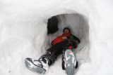 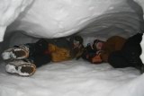 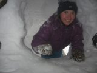 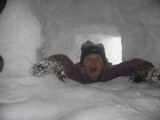
"Пещерные люди" :)
День теперь длинный. Миша и Лёха-Радист построили возле зимухи трамплин, девченки помогали. Разгонка хоть и с небольшим уклоном, но если ее сделать прямую и укатать, то разгоняет нормально! Даже с крыши зимухи можно прыгнуть, что я и сделал пару раз, впервые за два года :) А уж с трамплина прыгали ВСЕ!!! Даже из соседней зимухи пришел народ, Бек с друзьями, они сегодня не катались (безопасный фрирайд), зато хоть попрыгали :)
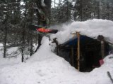 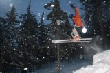 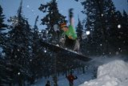
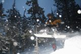 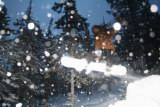 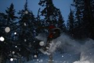
Воскресенье. Оля, Таня и Надя вышли пораньше на Лесной, позагорали без штанов перед подъемом, обогнали застрявших в кулуаре снегоходчиков и затропили на вершину! Я их только наверху догнал! Во как !
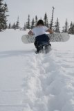 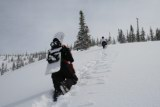 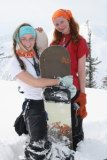
Да-а-а-а! Такие девченки нам ой-как нужны!!!
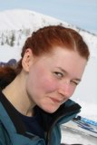
Снегоходчики следом за нами пришли,
очень забавные, но "кто из вас Крюков?" :)
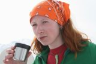 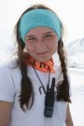 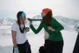 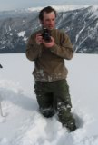 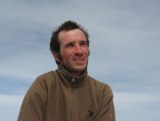
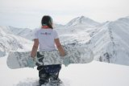
Iron Girl
С Лесного поехали по Веселому кулуару, но не до конца, а свернули под Каменным Мешком. Верх Лесного с нормальным снегом, катуха отличная, а вот ниже свежий вчерашний снег подтаял и сползал по ледяной корочке на солнечных склонах. Весна началась... На гору Мамай ходили Бек с друзьями, Миша и Лёха-Радист.
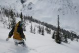 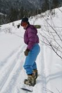
Оля едет с Лесного, а Надя внизу тренируется :)
Фотографии фотографировали: Таня, Оля, Лёха
Комментарии комментировал: Лёха Слюдянский
Март-апрель 2009